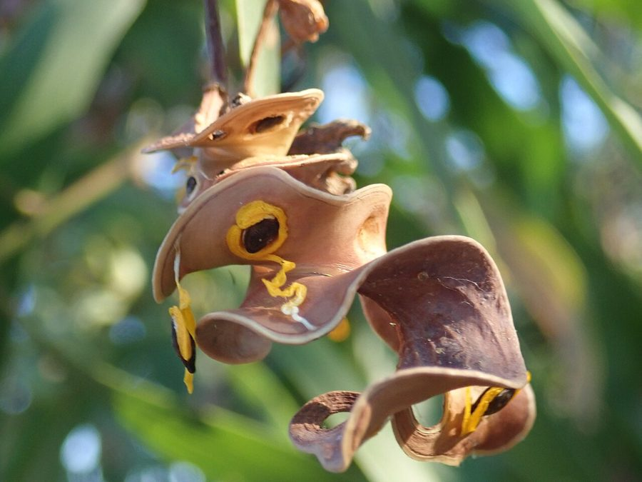

बंगाली बबूलEarleaf Acacia
Acacia auriculiformis · Fabaceae · FLR-0049

- Scientific name
- Acacia auriculiformis A.Cunn. ex Benth.
- Family
- Fabaceae
- Hindi
- बंगाली बबूल
- Status here
- invasive
- IUCN
- LC
When to look कब देखें
Present all year.
बंगाली बबूल / Earleaf Acacia
Acacia auriculiformis A.Cunn. ex Benth. — Fabaceae
बंगाली बबूल (इयरलीफ बबूल) — उत्तर प्रदेश के मैदानी भागों में सड़कों के किनारे, खाली जमीनों और वन विभाग के पुराने सामाजिक वानिकी (social forestry) रोपण क्षेत्रों में पाया जाने वाला एक मध्यम से बड़े आकार का सदाबहार विदेशी पेड़ है। यह मूल रूप से ऑस्ट्रेलिया का निवासी है, जिसे 1980 के दशक में बंजर भूमि के सुधार और ईंधन की लकड़ी के लिए भारत लाया गया था। इसकी पत्तियाँ वास्तव में सच्चे पत्ते नहीं हैं, बल्कि वे चपटे, हँसिए के आकार के तने के हिस्से (phyllodes) हैं जो पत्तों का काम करते हैं। वर्षा ऋतु के अंत में (अगस्त-अक्टूबर) इसमें पीले रंग की बारीक फूलों की बालियाँ (spikes) आती हैं। इसके फल घुमावदार और मुड़े हुए (twisted pods) होते हैं जो सूखने पर कान की बाली जैसी आकृति बना लेते हैं। बंगाली बबूल एक आक्रामक (invasive) प्रजाति है जो तेजी से फैलती है और अपने घने पत्तों के झड़ने से मिट्टी में रसायन छोड़ती है, जिससे स्थानीय वनस्पतियों का विकास रुक जाता है।
Quick Identification त्वरित पहचान
| Feature | Description |
|---|---|
| Form | Medium-sized evergreen tree (10–20 m) with an open canopy and weeping or drooping branchlets |
| Phyllodes | modified leaves (phyllodes) are sickle-shaped (falcate), leather-like, 10–18 cm long, with 3–4 prominent parallel longitudinal veins; no thorns |
| Flowers | Tiny, light yellow to golden-yellow, arranged in dense, cylindrical, thread-like spikes (5–8 cm long) in pairs in the leaf axils |
| Fruit | Highly twisted, curled, woody pod (5–8 cm long) that splits open into two halves when ripe, showing black seeds hanging from bright orange-red fleshy stalks (arils) |
| Bark | Grey or brownish, smooth when young, turning rough and vertically fissured in older specimens |
Field tip: Any medium-sized thornless evergreen tree carrying sickle-shaped leaf-like structures, yellow flower spikes, and woody pods that are highly twisted like a curled ear is an Earleaf Acacia.
Morphology आकारिकी
Biometrics (typical measurements for adult specimens in Basti plain environments):
| Feature | Measurement |
|---|---|
| Tree height | 10–20 m |
| Phyllode length | 10–18 cm |
| Phyllode width | 1.5–3 cm |
| Flower spike length | 5–8 cm |
| Pod length | 5–8 cm (when uncurled) |
Phyllodes: The leaves on adult trees are phyllodes — petioles that have flattened out to perform photosynthesis. True bipinnate compound leaves are visible only on young seedlings and saplings, disappearing as the tree grows.
Seeds: The seeds are glossy black, oval, and surrounded by a bright yellow-orange stalk (aril/funiculus) that attracts birds, aiding in seed dispersal.
Associated Species / Interactions सहजीवी संबंध
Invasive competitor and poor wildlife host.
- Native displacement: Spreads aggressively via seed rain, forming dense monospecific stands that shade out native grasses and woody shrubs like
[FLR-0046 Ber]and[FLR-0002 Calotropis gigantea]. - Low wildlife value: Unlike native trees, the exotic Acacia auriculiformis supports fewer local insect species, reducing foraging quality for insectivorous birds.
- Nesting shelter: House Crows (
[BRD-0027 House Crow]) occasionally build nests in its dense foliage, but it is generally avoided by native weaver birds ([BRD-0018 Baya Weaver]), which prefer thorny native acacias. - Rhizobial symbiosis: Associates with nitrogen-fixing soil bacteria, enabling it to colonize nutrient-poor acidic or sandy soils.
Life Cycle / Phenology जीवन चक्र
- Active growth: Retains its green phyllodes year-round, showing active growth during the warm, wet months (March–November).
- Flowering: Profuse golden-yellow flower spikes bloom at the end of the monsoon season (August–October).
- Fruiting: Coiled pods develop during late autumn, maturing and turning brown by December–February.
- Dispersal: The woody pods split open while hanging on the tree, exposing the black seeds on bright orange stalks. Birds consume the arils and disperse the seeds, which germinate rapidly during the next monsoon.
Pests and Diseases कीट और रोग
- Powdery Mildew: Fungal infections (Oidium spp.) cover the young phyllodes of nursery seedlings in white powder, causing leaf drop.
- Root Rot: Pathogens (Ganoderma species) attack the roots in waterlogged soils, causing tree decline and wind-throw.
- Phyllode Miner: Lepidopteran larvae tunnel inside the phyllodes, leaving whitish-grey trails.
Agricultural / Human Relevance कृषि प्रासंगिकता
Wood pulp, firewood, and ecological warning.
- Social forestry: Planted extensively by forestry departments in the late 20th century for quick biomass and wasteland reclamation.
- Fuelwood and paper pulp: The wood is hard, burns with high heat, and makes excellent domestic fuel and charcoal. It is harvested commercially for paper pulp and cheap board manufacturing.
- Invasive threat: Today, it is recognized as a problematic invasive weed in natural grasslands and scrublands. It should not be planted near crop fields, as its heavy leaf litter suppresses crop germination through allelopathic chemicals.
Traditional and Ethnobotanical Use
- Skin wash: In traditional folk practices, an infusion of the bark is sometimes used as a wash to treat localized skin itching and minor rashes.
- Soap substitute: The saponin-rich green phyllodes can be crushed in water to create a mild, soapy lather used by field laborers to wash hands.
- Charcoal source: Village woodcutters selectively harvest the wood to make high-grade charcoal for blacksmith workshops.
Expected Locally स्थानीय रूप से अपेक्षित
Not a field record. Written from published accounts for eastern Uttar Pradesh. No confirmed local sighting yet — if you have seen it, that is what the atlas needs.
अभी तक स्थानीय पुष्टि नहीं। यह विवरण प्रकाशित स्रोतों से है, किसी अवलोकन से नहीं।
Abundant along the railway tracks, canal banks, and degraded state lands in Basti, Harraiya, and Khalilabad. It has escaped cultivation and is actively colonizing vacant roadside plots and dried pond margins. Its dense evergreen canopy stands out in winter when surrounding native trees are losing their leaves.
Distribution वितरण
Global range: Native to northern Australia, Papua New Guinea, and Indonesia. It is widely introduced and naturalized across tropical Asia, Africa, and Central America.
In India: Planted throughout the country; extensively naturalized in West Bengal, Bihar, Odisha, and Uttar Pradesh.
In Uttar Pradesh: Common in plain districts, particularly in public plantations, roadsides, and social forestry zones.
In Basti district / eastern UP: Common invasive weed tree across all blocks.
Research Questions शोध प्रश्न
- How does the germination of native crop seeds (like wheat or mustard) change when exposed to leaf extract of Acacia auriculiformis? / बंगाली बबूल की पत्तियों के रस के संपर्क में आने पर गेहूं या सरसों के बीजों के अंकुरण पर क्या प्रभाव पड़ता है?
- What is the difference in soil moisture content under Acacia auriculiformis compared to native Acacia nilotica during dry summer months? / गर्मियों के महीनों में बंगाली बबूल के नीचे मिट्टी की नमी देशी बबूल (Babool) की तुलना में कितनी भिन्न होती है?
- Which local bird species in Basti feed on the seeds of Acacia auriculiformis and act as vectors for its dispersal?
- Does the high saponin content in Acacia auriculiformis phyllodes act as a natural defense against local leaf-eating insects?
- Can school children gather seedling and adult leaves of Earleaf Acacia to compare the bipinnate true leaves with the sickle-shaped phyllodes? — A simple developmental biology observation activity.
Similar Species मिलती-जुलती प्रजातियाँ
| Species | Key Difference | हिंदी |
|---|---|---|
Acacia nilotica (Babool [FLR-0047]) | Has long, sharp white thorns; leaves are bipinnate and feathery (not sickle phyllodes); flowers are yellow balls; native. | बबूल — सफेद कांटे, छोटे संयुक्त पत्ते, गोल फूल |
Leucaena leucocephala (Subabul [FLR-0045]) | Has bipinnate feathery leaves; flowers are white balls; pods are thin, flat, and straight; highly invasive. | सुबबूल — कांटे रहित, गोल सफेद फूल, सीधी फलियाँ |
Prosopis juliflora (Vilayati Kikar [FLR-0039]) | Has short thorns, small bipinnate leaves, pale yellow spikes, and straight straw-colored pods; highly invasive. | विलायती कीकर — कांटेदार झाड़ी, छोटे संयुक्त पत्ते |
Taxonomy & Classification वर्गीकरण
Original description. Allan Cunningham collected the species in northern Australia and named it Acacia auriculiformis. George Bentham published the description in 1842 in London Journal of Botany (Vol. 1, p. 377). The genus name Acacia is derived from the Greek akis (sharp point/thorn), although this species lacks thorns. The specific name auriculiformis is derived from the Latin auricula (ear lobe) and forma (shape), referring to the ear-shaped twisted pods.
Subspecies. Monotypic — no subspecies are designated.
Family and order placement. Placed in the order Fabales, family Fabaceae, subfamily Caesalpinioideae, tribe Acacieae.
Phylogenetic notes. In the reclassification of the genus Acacia, Acacia auriculiformis belongs to the subgenus Phyllodineae (the Australian wattles), which are characterized by the evolution of photosynthetic phyllodes instead of true leaves.
IUCN status rationale. Listed as Least Concern (LC) by the IUCN Red List. It is an extremely common, fast-growing, and widely planted species globally with expanding populations in introduced ranges.
Photo Gallery फोटो गैलरी
References संदर्भ
- Bentham, G. (1842). Notes on Mimoseae, with a synopsis of species: Acacia auriculiformis. London Journal of Botany, 1, 377. [original description]
- Brandis, D. (1906). Indian Trees. Archibald Constable & Co., London.
- Hooker, J. D. (1878). The Flora of British India. Vol. 2. L. Reeve & Co., London.
- National Research Council (1983). Mangium and Other Acacias for the Humid Tropics. National Academy Press, Washington DC.
- Botanical Survey of India. State Flora Series: Flora of Uttar Pradesh. BSI, Kolkata.
- IUCN SSC Global Tree Specialist Group (2021). Acacia auriculiformis. The IUCN Red List of Threatened Species. IUCN, Gland, Switzerland.
- GBIF Occurrence Data — Acacia auriculiformis (2026). GBIF taxon key: 2981001.
Source file: species/flora/trees/earleaf_acacia.md